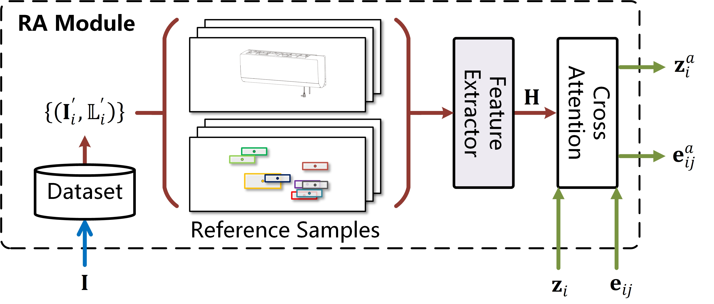
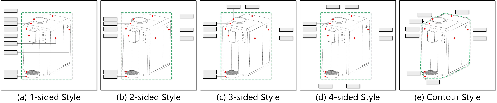
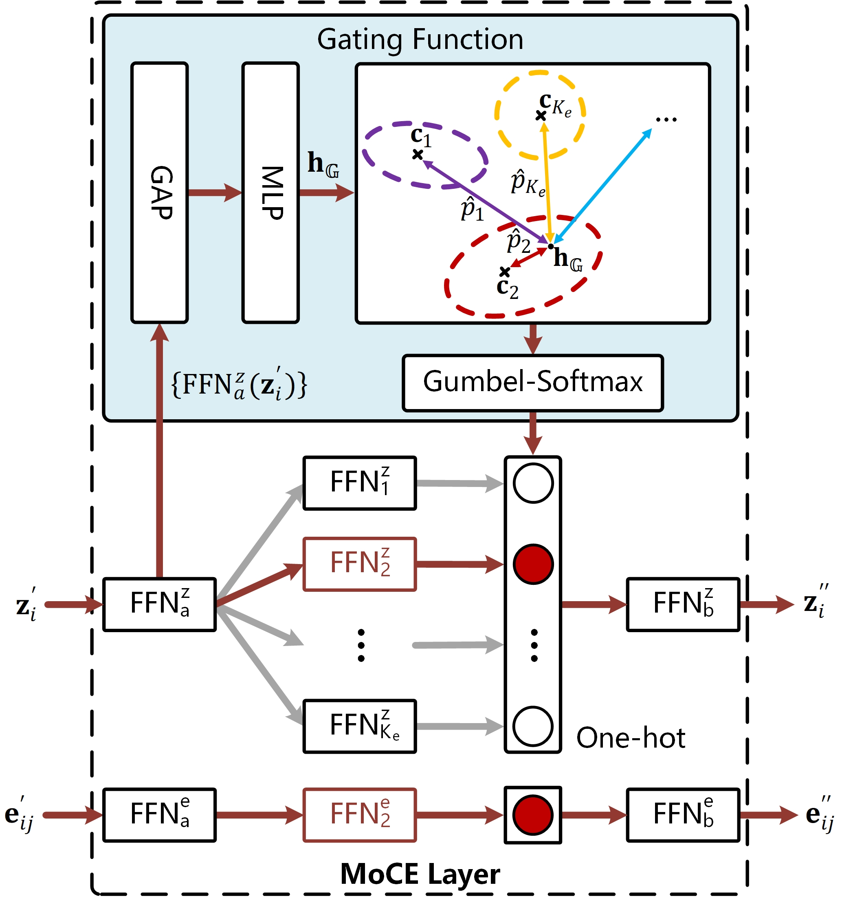
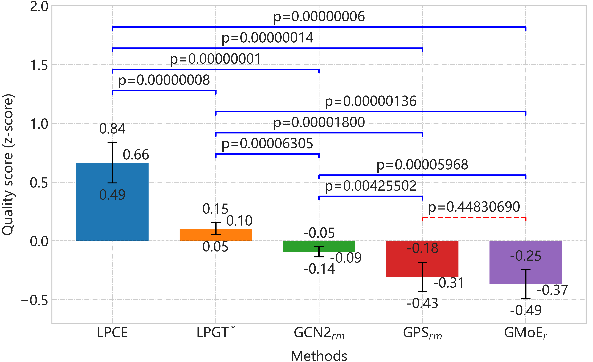

Mixture of Cluster-guided Experts for Retrieval-Augmented Label Placement
Pingshun Zhang1
Enyu Che1
Yinan Chen2
Bingyao Huang1
Haibin Ling3
Jingwei Qu1∗
1Southwest University 2Zhejiang University 3Westlake University
[PDF]
Abstract
Text labels are widely used to convey auxiliary information in visualization and graphic design. The substantial variability in the categories and structures of labeled objects leads to diverse label layouts. Recent single-model learning-based solutions in label placement struggle to capture fine-grained differences between these layouts, which in turn limits their performance. In addition, although human designers often consult previous works to gain design insights, existing label layouts typically serve merely as training data, limiting the extent to which embedded design knowledge can be exploited. To address these challenges, we propose a mixture of cluster-guided experts (MoCE) solution for label placement. In this design, multiple experts jointly refine layout features, with each expert responsible for a specific cluster of layouts. A cluster-based gating function assigns input samples to experts based on representation clustering. We implement this idea through the Label Placement Cluster-guided Experts (LPCE) model, in which a MoCE layer integrates multiple feed-forward networks (FFNs), with each expert composed of a pair of FFNs. Furthermore, we introduce a retrieval augmentation strategy into LPCE, which retrieves and encodes reference layouts for each input sample to enrich its representations. Extensive experiments demonstrate that LPCE achieves superior performance in label placement, both quantitatively and qualitatively, surpassing a range of state-of-the-art baselines.
MoE-driven label placement with retrieval augmentation
Architecture of LPCE
Architecture of the RA module
Five label layout styles. (a)-(e): 1-sided, 2-sided, 3-sided, 4-sided, and contour styles
Architecture of the reference feature extractor
Architecture of the MoCE layer
Quantitative Results
Comparison of label layout quality (PCK@0.05, IoU, LV, Overlap (%)) and efficiency on the SWU-AMIL dataset. Numbers in bold indicate the best performance.
Qualitative Results
Qualitative results on the AMIL dataset and four unseen samples.
User Study
Results of the user study: quality scores with 95% confidence intervals.
Reference
@article{zhang2026mixture,
|